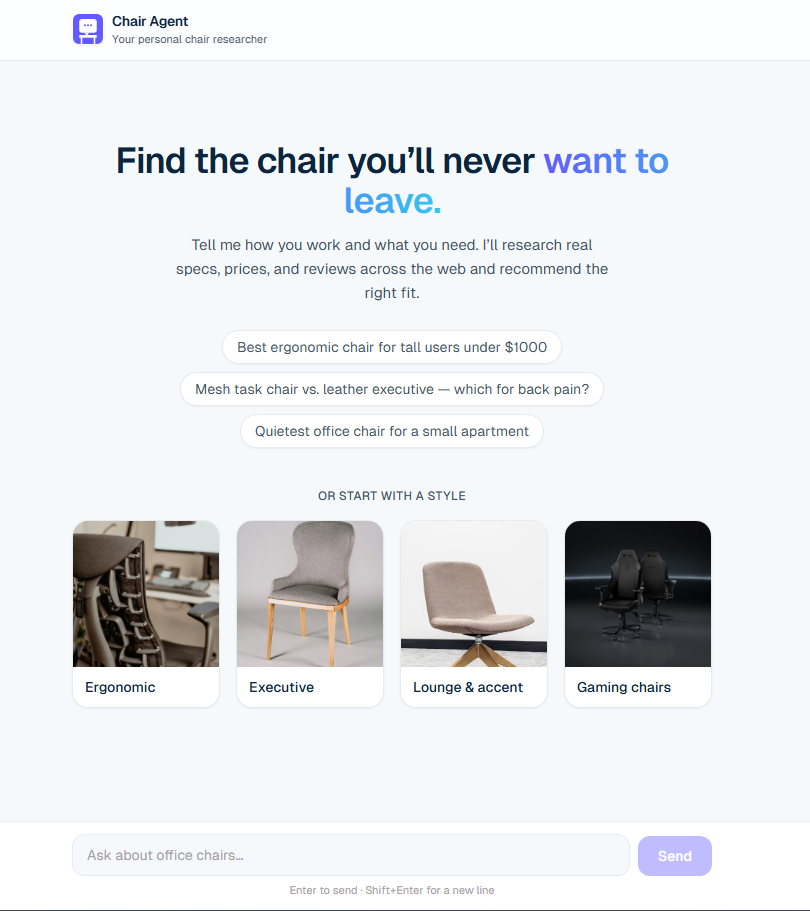

Chair Agent: an AI that researches office chairs for you.
Chair Agent turns a vague ask like "a quiet chair for a small apartment" into a specific, reasoned pick. You tell it how you work, your budget, and your body type, and it researches real specs, prices, and reviews across the open web before it answers. It's a Next.js app built on the Anthropic API, with Claude driving a streaming agent loop that decides when to search, when to read a page in full, and when it has enough to recommend.
- Two tools, two trust levels. A built-in web search finds candidate pages, then a custom page reader pulls the full text of the few worth opening, so the model reasons from real sources instead of guessing from snippets.
- Source-trust rules built in. It weights independent, hands-on reviews above marketing copy, treats manufacturer pages as fact for specs but not for judgment, and says so when sources disagree.
- Transparent, streaming UX. The answer streams in token by token while every search and page read shows up as a live status line, so you watch the research happen instead of waiting on a spinner.